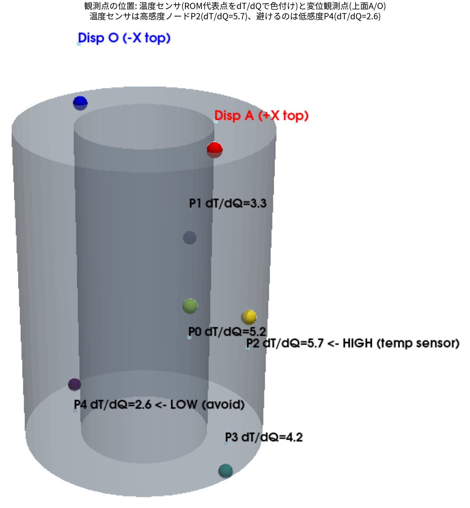

少数の温度・変位観測から
熱変形を推定する
― OpenFOAM＋FrontISTR＋データ同化のオープンソース実装 ―
ヤマザキマザック株式会社 楠村 拓也
オープンCAE学会シンポジウム B-16
2026年11月12日（木）
はじめに
- 工作機械の加工誤差のうち、熱変位が占める割合は最大75 %［Mayr et al. 2012］
- 対策は回避（熱設計・冷却）と補償（熱変位補正）。回避はコストが高く、実用の主役は補償
- 補償の前提は熱変形を正しく予測できること。しかし熱解析で温度勾配まで完全に再現するのは難しい

片側加熱による熱変形と変位の時間変化（誇張表示）
境界条件の不確かさが予測精度を左右する
ISO 230-3 も「標準試験は実運転を模擬しない。とくにクーラントの影響は大きい」と明記している。
目的
- 数値モデルだけでは、初期条件や境界条件の不確かさのために現実を再現しきれない
- そこで限られた温度・変位の観測と数値モデルを統合するデータ同化を用いる
① 全温度場 ② 熱変形 ③ 発熱量 ④ 境界条件（放熱）
を逐次推定する枠組みを、オープンソースだけで構築する

題材：片側ヒータ付き中空円筒（鋼）。15 W を 0〜300 s 投入し冷却
使用したOSS
| 役割 | ソフト |
|---|---|
| 熱流体固体連成（CHT） | OpenFOAM v2412 |
| 熱弾性・変形 | FrontISTR |
| データ同化・ROM | Python（NumPy／SciPy） |
固体20,696セル。コード・データ・記事はすべて公開
データ同化とは

実際のEnKF計算。予報（青破線）は時間とともに真値から離れ分散も広がるが、
観測が来るたびに解析（赤）が引き戻し、分散が縮む
それぞれの確からしさで
重み付けして融合し、
測っていない量まで推定する
| 段階 | すること |
|---|---|
| 予報 | モデルで時間を進める → 分散が増える |
| 解析 | 観測で引き戻す → 分散が減る |
シミュレーションは全点出るがずれる。実測は正しいが数点しかない。
根拠はベイズの定理： \( \underbrace{p(x\mid y)}_{\text{解析}} \propto \underbrace{p(y\mid x)}_{\text{観測の尤度}}\;\underbrace{p(x)}_{\text{予報}} \)
ガウス分布なら、この最大化は1本の更新式になる： \( x^a = x^b + K\,(y - Hx^b), \quad K=BH^{\mathsf T}(HBH^{\mathsf T}+R)^{-1} \)
データ同化の種類と、今回の選択
| 分類 | 手法 | 考え方 | 特徴 |
|---|---|---|---|
| 逐次 データ同化 観測が来るたびに その場で更新 |
OI （最適内挿） |
共分散 \(B\) を固定して更新式を1回解く | 最も軽い・仕組みが明快 パラメータ推定は苦手 |
| カルマンフィルタ | \(B\) を線形モデルで時間発展させる | 線形・ガウスなら最適 高次元では共分散が巨大 | |
| EnKF （アンサンブル） |
多数の分身の散らばりから \(B\) を作る | 高次元の場に強い パラメータも同時推定できる | |
| 粒子フィルタ | 重み付き粒子で分布そのものを表す | 非ガウス・多峰でもOK 高次元で粒子が縮退 | |
| 変分法 時間窓全体を まとめて最適化 |
3D-Var | ある時刻の評価関数 \(J(x)\) を最小化 | 共分散を陽に持たなくてよい |
| 4D-Var | 時間窓全体で \(J\) を最小化 | 精度が高い 随伴コードの実装が必要 |
OpenFOAM ＋ FrontISTR に適用した
熱伝導は線形・誤差はガウス → 変分法の随伴は不要、粒子フィルタの利点も活きない

粒子フィルタは400粒子でも有効粒子数1.02個まで縮退（約2万次元）
課題① OIでは不十分
OpenFOAM＋FrontISTR の双子実験（正解が分かる人工観測）でOIを実行した。

実ソルバ（20,696セル）でのOI。温度は合うが発熱量が当たらない
| 評価量 | 結果 |
|---|---|
| 最終の温度場RMSE | 0.090〜0.113 K |
| 発熱量 \(Q\) の推定 | 8.8〜9.0 W（真値15 W） |
| \(\sigma_T\) を振った影響 | 0.479〜0.482 K（ほぼ不変） |
＝パラメータ調整では解決しない
原因：温度と\(Q\)を独立に見積もった固定\(B\)には \(\mathrm{Cov}(T,Q)=0\) が入っている。ゼロに何を掛けてもゼロなので、観測が来ても\(Q\)は動かない。
課題② EnKFは共分散を作れるが重い
EnKFなら \(Q\) が当たる
分身を少しずつ違う \(Q,h\) で前進させると、相関が自動で現れる（温度と\(Q\)を独立に初期化しても）
| サイクル | corr(\(T_{P2}\), \(Q\)) |
|---|---|
| 0（初期） | −0.08（無相関） |
| 5 | 0.70 |
| 10 | 0.84 |
結果：温度1点だけで \(Q=15.95\) W（真値15 W）
しかし計算コストが大きい
計算量 ≒（分身の数）×（サイクル数）×（予報1回のコスト）
| 予報モデル | 1回のコスト |
|---|---|
| 実ソルバ（CHT＋FEM） | 分オーダー |
→ 数時間〜数日
流体解析の計算時間がボトルネック
→ 予報モデルだけを軽いROMに置き換える
課題③ どこの温度を観測すべきか

候補点と発熱への温度感度 \(\partial T/\partial Q\)
- センサは数点しか置けない（内部・回転部には置けない）
- 「勘で置く」と結果が桁で変わる
- どこに置けば何が分かるのか、定量的な基準が要る
① 代表点をどう選ぶか（ROMを組むため）
② 観測点をどう選ぶか（推定精度のため）
この2つは別の問題であることも、後で示す。
低次元モデル化 ― POD
OpenFOAMの温度場スナップショット（20,696セル × 121時刻）を特異値分解し、場の「型」を抽出する。
\( X=\sigma_1 u_1 v_1^{\mathsf T}+\sigma_2 u_2 v_2^{\mathsf T}+\cdots \) （空間の型 × 時間の動き × 大きさ）

| モード | エネルギー | 意味 |
|---|---|---|
| 1 | 91.8 % | 全体が一様に昇温する型 |
| 2 | 8.08 % | ヒータ側と反対側の温度差 |
| 3 | 0.11 % | ほぼ効かない |
温度場は実質2次元しか動いていない
＝少数の点で表せる
実装は numpy で3行。物理の知識は一切与えていない。
代表点の選択 ― Q-DEIM
モード行列に枢軸付きQR分解をかけ、「信号が大きく・互いに独立な点」を貪欲に選ぶ。

選ばれた代表5点（勘ではなくデータから決定）

| 選び方 | 5点からの復元RMSE |
|---|---|
| Q-DEIM | 0.00081 K |
| ランダム（中央値） | 0.00220 K |
| ランダム（最悪） | 1.396 K |
価値は「平均的に良い」ではなく大外れを確実に避けること
ROMの構築と校正

5ノードと結合コンダクタンス \(K_{ij}\)
選んだ5点上で集中定数モデルを組む：
\( C_i\dfrac{dT_i}{dt}=\sum_j K_{ij}(T_j-T_i)+q_i(t)-h(T_i-T_{\mathrm{air}}) \)
係数 \(C_i, K_{ij}, h\) は幾何から決めず、OpenFOAM結果に合うよう最小二乗で校正する。
| 項目 | 値 |
|---|---|
| 校正残差 | 0.0142 K |
| 0→600 s の前進積分 | 約31 ミリ秒 |
| 実ソルバ（1サイクル） | 分オーダー |
EnKFが現実的な時間で回るようになった
結果① 温度が精度よく再現できる

同化を重ねるごとに全点温度RMSEが下がる

校正したROMはCHTの温度履歴をほぼ再現（残差0.0142 K）
少数の温度観測だけで全点の温度が真値へ収束する
結果② 5点から温度分布を復元する
gappy-POD により、代表5点の測定値から全20,696セルの温度を再構成する。
\( a=(U_{r,P})^{-1}(T_P-\bar u_P), \qquad \hat T=\bar u+U_r\,a \)

マゼンタの5点だけを測り、そこから全場を復元したアニメーション
結果③ 温度から熱変形へ
復元した温度場をFrontISTRの熱弾性へ渡し、未観測の変位を推定する。

| 観測構成 | 温度RMSE | 変位差誤差 |
|---|---|---|
| 同化なし | 4.585 K | ― |
| 温度1点（低感度） | 1.036 K | 1.187 µm |
| 温度2点 | 0.503 K | 0.931 µm |
| 温度2点＋変位2点 | 0.160 K | 0.165 µm |
約29倍の改善
実務では温度→変位を毎回FEMで解かず、線形化した感度 \(W=K_s^{-1}H_T\) で直接変位を出せる。
熱感度による観測点の選択

FrontISTRで求めた熱感度 \(W=K_s^{-1}H_T\) の分布

同じ変位2点でも、置く場所で効果が変わる
| 観測構成 | 加熱期の平均温度RMSE |
|---|---|
| データ同化なし | 5.27 K（基準） |
| 温度のみ | 3.52 K |
| 温度＋変位2点（低W） | 2.43 K（あまり効かない） |
| 温度＋変位2点（高W） | 0.86 K |
結果④ 観測を増やすほど精度が上がる

どこで観測しているか（温度：赤・青／変位：橙・灰）

| 観測構成 | 温度RMSE | 未観測の変位差誤差 |
|---|---|---|
| 温度1点 | 0.617 K | 0.869 µm |
| 温度2点 | 0.197 K | 0.151 µm |
| ＋変位2点（高W） | 0.159 K | 0.077 µm |
観測の価値を1本の式で測る
「どこに置くか」は、観測がもたらす分散の減少量で定量化できる。
\( \Delta(X,y)=\dfrac{\mathrm{Cov}(X,y)^2}{\mathrm{Var}(y)+r} \)

分子に推定対象が入る → 対象が変われば最適な観測も変わる
| 推定したい量 | 最適な観測 |
|---|---|
| \(T_1\) | 温度点1 |
| \(T_2\) | 温度点2 |
| 発熱量 \(Q\) | 変位 |
| 全温度場 | 変位 |
まとめ
| 段階 | やったこと | 結果 |
|---|---|---|
| 連携 | OpenFOAM(CHT) → FrontISTR(熱弾性) | 温度・変形・面ごとの熱伝達率を算出 |
| 同化 | OI／EnKFで温度・変位を同化 | 実ソルバOIは \(Q\)=8.9 W止まり → EnKFで15.95 W |
| 低次元化 | PODで場を2モードに圧縮 | 0→600 s が31 ms（実ソルバは分オーダー） |
| 代表点 | Q-DEIMで5点を自動選定し校正 | 校正残差 0.0142 K |
| 観測設計 | 熱感度と観測の価値で配置を決める | 同化なし4.59 K → 0.16 K |
CHT → 熱変形 → データ同化 → ROM を一気通貫で構築できた
さらに「どこを・何で・いつ測るか」を、推定対象ごとに定量的に設計できるようになった。
限界と今後
正直な限界
- 放熱 \(h\) は推定が難しい。温度応答（0.05 K）が観測ノイズ（0.30 K）より小さい
- Q-DEIM点は「復元に良い点」であって、推定に最適な点である保証はない
- ROMは訓練した運転条件の範囲でのみ有効。加熱位置が変われば作り直しが要る
- 本研究の比較は候補内での比較であり、大域最適の証明ではない
今後
- 実機形状・実測データへの適用（現在は双子実験）
- 設置制約を入れた制約付き最適配置
- OpenModelica との連成（FMI/FMU）による1D-CAEとの統合
公開情報
| 内容 | 場所 |
|---|---|
| リポジトリ（計算コード一式） | github.com/kamakiri1225/thermal-da-demo |
| 解説記事（全5回・数式と図つき） | kamakiri1225.github.io/thermal-da-demo/ |
| 本発表の元になった検証スクリプト | run/svd_explained.py, run/qdeim_explained.py,run/enkf_correlation_demo.py, run/redundancy_check.py |
解説記事の構成
| blog_001 | OpenFOAM＋FrontISTR で熱流体固体連成 → 熱膨張、熱伝達率の分布 |
| blog_002 | OI（最適内挿）― 数式と3点モデルの手計算から |
| blog_003 | アンサンブルカルマンフィルタ ― 分身の散らばりで共分散を作る |
| blog_004 | POD で代表点をデータから選ぶ ROM |
| blog_005 | 推定対象で最適センサは変わる ― 観測の価値を1本の式で |
ご清聴ありがとうございました